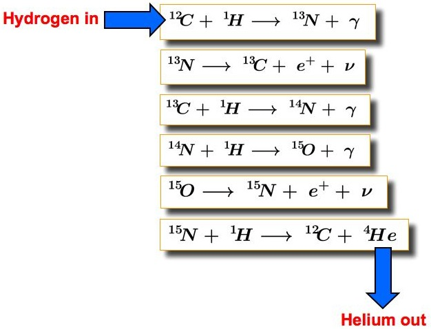

The ‘CNO cycle’ refers to the Carbon-Nitrogen-Oxygen cycle, a process of stellar nucleosynthesis in which stars on the Main Sequence fuse hydrogen into helium via a six-stage sequence of reactions. This sequence proceeds as follows:
- A carbon-12 nucleus captures a proton and emits a gamma ray, producing nitrogen-13.
- Nitrogen-13 is unstable and emits a beta particle, decaying to carbon-13.
- Carbon-13 captures a proton and becomes nitrogen-14 via emission of a gamma-ray.
- Nitrogen-14 captures another proton and becomes oxygen-15 by emitting a gamma-ray.
- Oxygen-15 becomes nitrogen-15 via beta decay.
- Nitrogen-15 captures a proton and produces a helium nucleus (alpha particle) and carbon-12, which is where the cycle started.

Thus, the carbon-12 nucleus used in the initial reaction is regenerated in the final one and hence acts as a catalyst for the whole cycle. The cycle commences once the stellar core temperature reaches 14 × 106 K and is the primary source of energy in stars of mass M > 1.5 M⊙. Stars of lower mass convert hydrogen to helium via an alternative process known as the ‘proton-proton chain’.